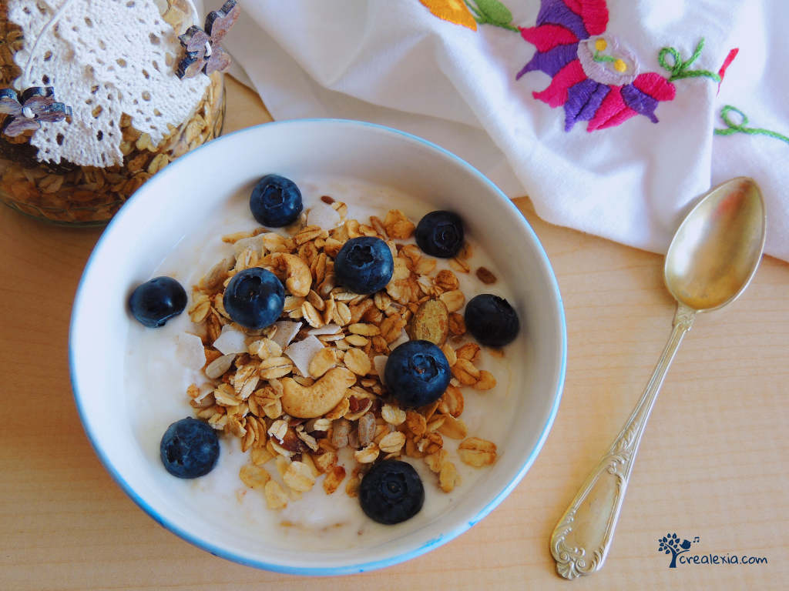
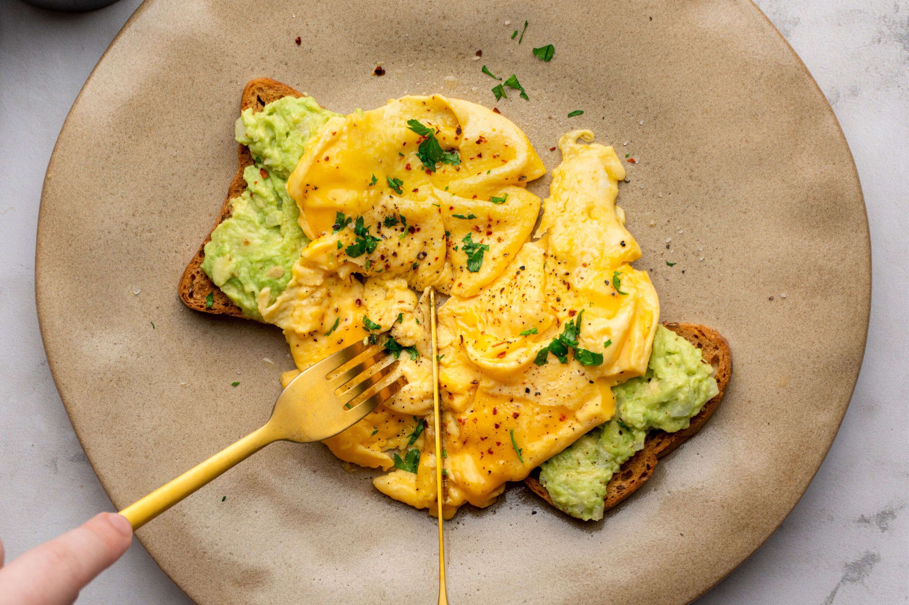

Reggeli
Tartalom
Palacsinta
Az összes hozzávalót beletesszük a turmixba, és alaposan összemixeljük. Érdemes 2 részletben hozzáadni a tejet és a lisztet, így egyszerűbb, hatékonyabb.
Felforrósítunk és beolajozunk egy teflon serpenyőt. A tésztakeverékből 2-3 korongot csorgatunk bele. A turmix kiöntője segítségével egyszerű adagolni. Aranybarnára sütjük mindkét oldalát.
Ízlés szerint fogyaszthatjuk mézzel, mogyorókrémmel, olvasztott csokival, lekvárral, juharsziruppal.
muzli

Az almaragu első lépéseként az almákat 1,5 cm-es darabokra kockázzuk, majd egy gyorsforralóban, közepes hőfokon elkezdjük párolni 50 ml vízzel és a barna cukorral. Folyamatosan kevergetjük, és amikor kissé összeesett az alma, hozzáadjuk a fahéjat, a citromlevet és a reszelt citromhéjat, majd fedő alatt 5-6 percig főzzük.
A maradék vizet kikeverjük a keményítővel, és lassan hozzáöntjük a raguhoz. Összeforraljuk, és meg is vagyunk. Felhasználhatjuk akár már frissen is, de szerintem lehűtve sokkal jobb – 4-5 napig hűtőben tárolva simán eláll. :)
tojas

Egy közepes tálkában a tojásokat a tejszínnel, egy csipet sóval és őrölt borssal alaposan keverjük össze, amíg teljesen egyneművé válik.
Olvasszuk meg a vajat egy közepes serpenyőben. Forrósítsuk fel kellően, de ne barnuljon meg.
Öntsük a tojásos keveréket a serpenyőbe, és hagyjuk 20-30 másodpercig sülni (akkor jó, ha a széle már kezd megszilárdulni).
Egy gumispatulával körkörös mozdulatokkal keverjük a tojásokat a serpenyő pereme mentén haladva. Ha szükséges, kissé döntsük meg az edényt, hogy a közepén lévő nyers tojás kifolyjon. Ezt addig ismételjük, amíg a rántotta összeáll, de még lágy és remegős marad a közepe.
A kész rántottát szórjuk meg frissen aprított petrezselyemmel és egy kevés chilivel. Szükség szerint sózzuk, borsozzuk. Majd kedvünk szerint tálaljuk: pirítóssal, sült szalonnával vagy friss zöldségekkel.